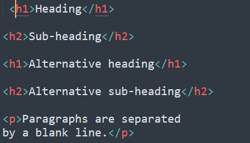

Podstawowe zagadnienia
Markdown Wprowadzenie
Markdown to lekki język znaczników, który pozwala na formatowanie tekstu za pomocą zwykłych konwencji tekstowych. Ta strona internetowa poprowadzi Cię przez podstawy Markdowna i zapewni przykłady i ćwiczenia do praktyki.
Język powstał w 2004 r. pod kierownictwem Johna Grubera.
Celem projektu było stworzenie banalnego, czystego formatu tekstowego, który umożliwi szybkie tworzenie dokumentów oraz konwersję do znanych formatów np. HTML. Plik zapisujemy z rozszerzeniem ".md".
Nagłówki
Aby utworzyć nagłówki w Markdown, użyj symbolu "#" po spacji i tekstu nagłówka. Liczba użytych symboli "#" określa poziom nagłówka. Na przykład, jeden "#" tworzy poziom 1 nagłówka, dwa "#" tworzy poziom 2 nagłówka itp.
# Nagłówek 1 ## Nagłówek 2 ### Nagłówek 3
Listy
Aby utworzyć listy w Markdown, użyj symbolu "-" lub liczby i kropki. Przykład:
- Element listy 1 - Element listy 2 - Element listy 3 1. Element listy 1 2. Element listy 2 3. Element listy 3
Linki i obrazy
Aby utworzyć linki w Markdown, umieść adres URL w nawiasach kwadratowych,a w nawiasach okrągłych wpisz tekst, który ma być linkiem.
Akcentowanie
*To jest pochylony tekst* _To jest pogrubiony tekst_ To jest podkreślony tekstPrzykładowy kod napisany w języku Markdown

rozpocznij test